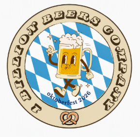

Conosciuto anche come RZIOUH (da gridare a pieni polmoni),
è famoso principalmente per aver guidato un trattore giocattolo giù per una discesa,
schiantandosi contro un albero. Forse adesso si spiegano molte cose.